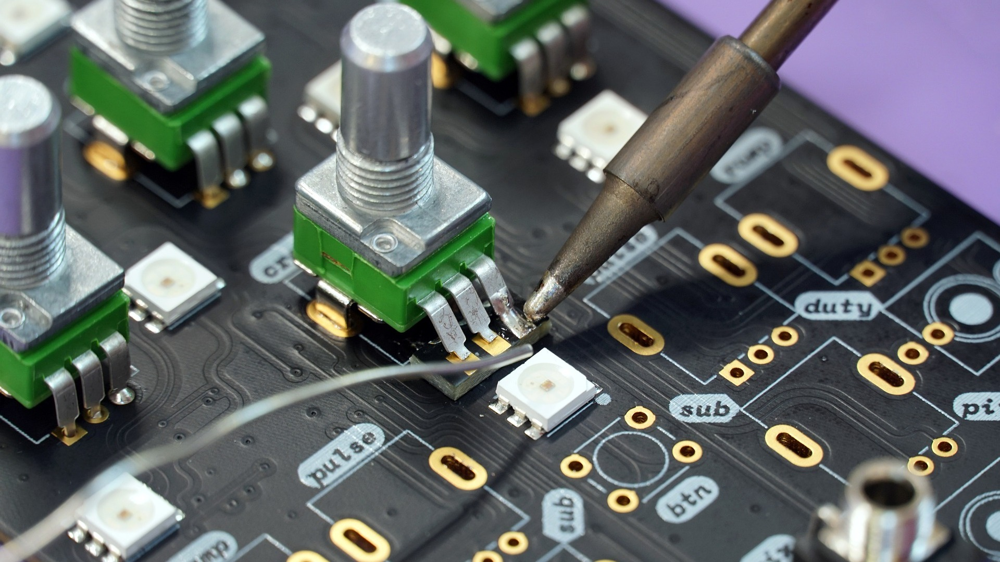

Cómo soldar componentes electrónicos en un chipset
Soldar componentes electrónicos en un chipset puede parecer una tarea desalentadora para
muchos. Sin embargo, con las herramientas y técnicas adecuadas, es posible realizar esta tarea de manera
efectiva y segura. Es importante asegurarse de que se tienen las herramientas adecuadas, incluyendo un
soldador de estaño, soldadura, una esponja húmeda y pinzas. Además, es importante tener cuidado al
manipular componentes electrónicos, ya que son muy sensibles y pueden dañarse fácilmente.
Para soldar un componente electrónico en un chipset, primero se debe aplicar una pequeña cantidad de
soldadura a los pines del componente. Luego, se debe calentar el soldador de estaño y tocar los pines
con la punta caliente del soldador, asegurándose de que la soldadura se derrita y se adhiera a los pines
y al chipset.
Es importante no sobrecalentar los componentes electrónicos durante este proceso, ya que esto puede
dañarlos. Además, es importante asegurarse de que la soldadura no forme puentes entre los pines, ya que
esto puede causar cortocircuitos y dañar el chipset.
En conclusión, soldar componentes electrónicos en un chipset puede ser una tarea desafiante, pero con
las herramientas y técnicas adecuadas, es posible realizar esta tarea con éxito. Es importante tener
cuidado al manipular los componentes electrónicos y asegurarse de no sobrecalentarlos o crear puentes de
soldadura.